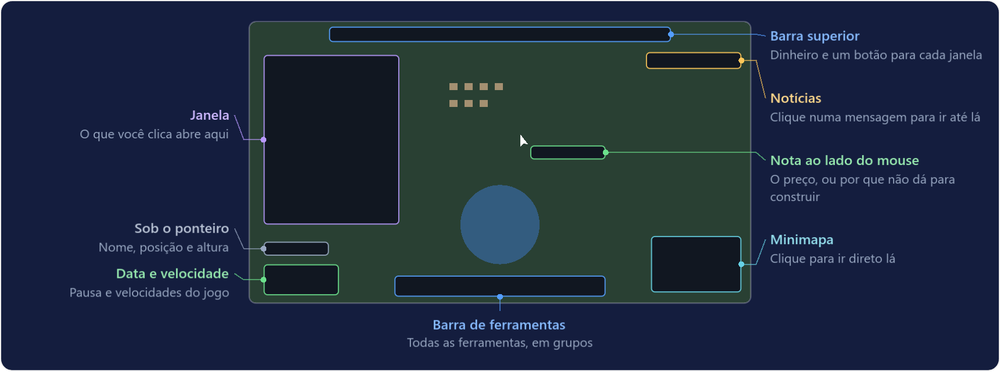

A tela
As barras, as janelas e a nota ao lado do mouse.
Tudo está ao alcance em três lugares: a barra superior, a barra de ferramentas embaixo e a nota que segue o mouse.


| Onde | O que faz |
|---|---|
| Barra superior | Seu dinheiro (clique nele para abrir Finanças) e um botão para cada janela. |
| Data e velocidade | A data, no canto inferior esquerdo, com a pausa e as velocidades do jogo. |
| Barra de ferramentas | Inspecionar, Estradas, Ferrovia, Portos, Terreno, Demolir, Desfazer e Veículo. Escolher um grupo abre uma fileira com as ferramentas dele acima da barra. |
| Minimapa | O mundo inteiro no canto. Clique nele para pular até aquele ponto. |
| Notícias | As mensagens sobre sua empresa aparecem conforme as coisas acontecem. Clique numa para ir ao lugar de que ela fala; as notícias de objetivos, subsídios e pedidos abrem Objetivos. A janela de Notícias guarda todas, e em Todas as notícias você também vê o que os rivais e outras cidades estão fazendo. |
A nota ao lado do mouse
- Antes de construir, ela mostra o preço de um quadrado de estrada, trilho, fiação aérea ou ponte.
- Enquanto você arrasta, ela mostra o preço total e o que você está construindo, em verde.
- Quando algo não pode ser construído, ela fica vermelha e diz por quê: um edifício no caminho, terreno íngreme demais, falta de dinheiro ou uma prefeitura que diz não.
Olhar as coisas
- Com Inspecionar (1), clique num veículo, estação, indústria ou edifício para abrir a janela dele. Aponte para qualquer coisa para ver o que é.
- Com Inspecionar, deixe o ponteiro um momento sobre uma estação, o nome de uma cidade, uma indústria, um veículo ou um edifício e ao lado aparece uma ficha com os números principais: a carga esperando e as avaliações, a população e o que a prefeitura pensa de você, o que uma indústria produziu e quanto foi transportado, a carga e o lucro de um veículo. Nas Configurações dá para desligar as fichas.
- Com uma ferramenta de construção na mão, o canto inferior esquerdo diz o que está sob o ponteiro, com as coordenadas e a altura.
- Essa janela fica à esquerda. Clicar em outra coisa a substitui, e uma seta de voltar na barra de título retorna ao que você estava vendo.
- Telas como Veículos, Finanças ou este guia abrem uma de cada vez: a nova substitui a anterior, e apertar de novo a tecla ou o botão de uma tela a fecha.
- Clique no alfinete de uma janela para mantê-la aberta, abra o que abrir. Em Configurações há uma opção para deixar todas as janelas abertas.
- Cidades e indústrias têm pequenos ícones de carga: vazados para o que precisam, cheios para o que produzem.
- Arraste uma janela pela barra de título. Esc fecha a que estiver por cima.
Listas do que você tem
- Veículos (V) lista sua frota com o lucro de cada veículo. Ordene por Requer atenção para ver primeiro os que estão com problemas.
- Estações (Ctrl+S) lista todas as estações com o que está esperando nelas e suas avaliações.
- Linhas (Ctrl+L) lista suas linhas com as paradas, os veículos e o lucro. Veja Linhas.
- Problemas (I, o sinal de aviso, com um número) lista tudo o que está parado ou dando errado, cada um com o porquê e um botão que resolve ou leva você até lá.
- Nessas listas, clique numa linha para abri-la, ou no botão de alvo para vê-la no mapa. Em Problemas, um clique numa linha mostra o lugar e o botão ao lado resolve.
- Objetivos (J, a bandeira) reúne seus primeiros passos, suas conquistas, quão perto está o objetivo da sua empresa e os subsídios e pedidos das cidades em oferta. Veja Objetivos e conquistas.
Salvar
- F5 salva na hora e F9 carrega esse jogo salvo de novo.
- O menu do jogo (Esc) salva com o nome que você escolher e carrega qualquer jogo salvo.
- O jogo também salva sozinho, a cada três meses, a menos que você mude isso em Configurações.
Todos os atalhos estão em Controles.